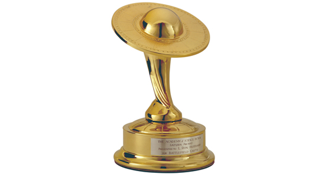
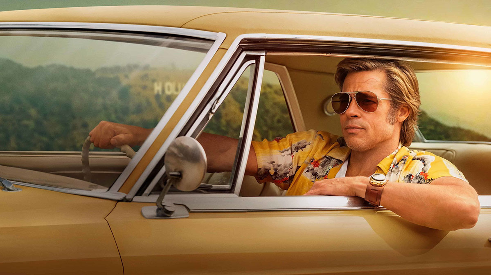
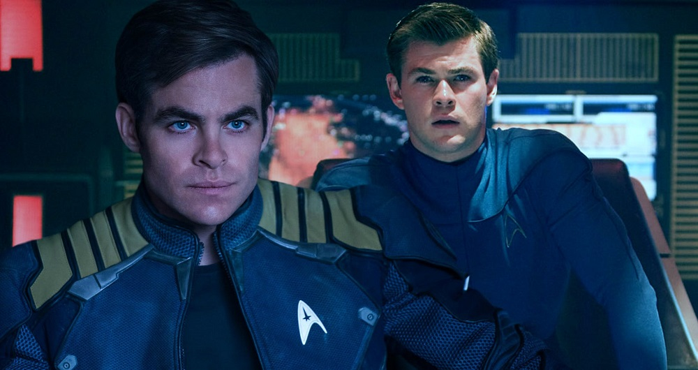
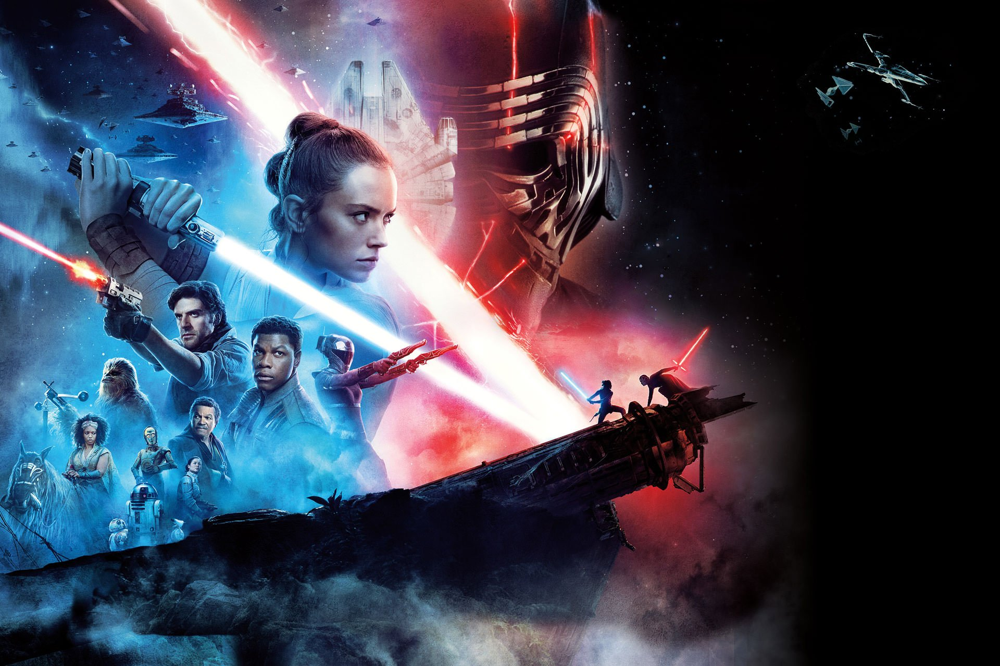

Menu
برندگان جوایز ساترن 2021 مشخص شد

ساترن فهرست کاملی از برندگان جوایز چهل و ششمین دوره از جشنواره علمی تخیلی،ترسناک و فانتزی اش را منتشر کرد
جوایز فیلم ها
:بهترین فیلم علمی تخیلی
جنگ ستارگان خیزش اسکای واکر
:بهترین فیلم اقتباس شده از کمیک
جوکر
:بهترین فیلم فانتزی
روزی روزگاری در هالیوود
:بهترین فیلم ترسناک
مرد نامرئی
:بهترین فیلم اکشن و ماجراجویانه
مولان
:بهترین فیلم مهیج
چاقو کشی
:بهترین فیلم بین المللی
انگل
:بهترین انیمیشن
به پیش
:بهترین فیلم مستقل
هجوم
:بهترین بازیگر مرد
جان دیوید واشنگتن برای نقش آفرینی در فیلم تنت
:بهترین بازیگر زن
الیزابت ماس برای نقش آفرینی در فیلم مرد نامرئی
:بهترین بازیگر نقش مکمل مرد
بیل هیدر برای نقش آفرینی در فیلم آن بخش2
:بهترین بازیگر نقش مکمل زن
آنا د آرماس برای نقش آفرینی در فیلم چاقو کشی
:بهترین بازیگر جوان
کایلیگ کارن برای نقش آفرینی در فیلم دکتر اسلیپ
:بهترین کارگردان
جی جی آبرامز برای ساخت فیلم جنگ ستارگان خیزش اسکای واکر
:بهترین فیلمنامه نویس
برای نویسندگی فیلمنامه روزی روزگاری در هالیوود
:بهترین صحنه
باربارا لینگ برای طراحی صحنه فیلم روزی روزگاری در هالیوود
:بهترین تدوین
باب دوسی برای تدوین فیلم چاقو کشی
بهترین موسیقی:
جان ویلیامز برای آهنگسازی فیلم جنگ ستارگان خیزش اسکای واکر
:بهترین طراح لباس
بینا دایگلر برای طراحی لباس فیلم مولان
:بهترین گریم
آماندا نایت و نیل اسکنلن برای گریم شخصیت های فیلم جنگ ستارگان خیزش اسکای واکر
:بهترین جلوه های ویژه
راجر گایت،نیل اسکنلن،باتریک دوباخ و دومینیک توهی برای فیلم جنگ ستارگان خیزش اسکای واکر

جوایز سریال ها
:بهترین سریال علمی تخیلی
پیشتازان فضا:اکتشاف
:بهترین سریال ترسناک
واکینگ دد
:بهترین سریال اکشن و مهیج
بهتر است با ساول تماس بگیرید
:بهترین سریال فانتزی
برای تمام بشریت
:بهترین مینی سریال(کمتر از ده قسمت)
ماندالوریان
:بهترین انیمیشن سریالی
جنگ ستارگان:جنگ های کلون
:بهترین اقتباس تلوزیوننی ابر قهرمانی
پسر ها
:بهترین فیلم سرویس های استریم
انولا هولمز
:بهترین بازیگر مرد مجموعه های تلویزیونی
پاتریک استوارت برای نقش آفرینی در سریال پیشتازان فضا:پیکارد
:بهترین بازیگر زن مجموعه های تلویزیونی
کترینا بلف برای نقش آفرینی در سریال غریبه
:بهترین بازیگر مکمل مرد مجموعه های تلویزیونی
داگ جونز برای نقش آفرینی در سریال پیشتازان فضا:اکتشاف
:بهترین بازیگر مکمل زن مجموعه های تلویزیونی
دانیل پانابیکر برای نقش آفرینی در سریال فلش
:بهترین بازیگر جوان مجموعه های تلویزیونی
بریک بسینجر برای نقش آفرینی در سریال دختر ستاره ای
:بهترین بازیگر مهمان مجموعه های تلویزیونی
جاین کرایر برای حضور در سریال سوپر گرل

جوایز محصولات خانگی
:4kبهترین فیلم
فیلم چاقو کشی
:بهترین فیلم بلوری کلاسیک
نسخه خاص فیلم دکتر سایکلاپس
:بهترین کالکشن بلوری
گودزیلا فیلم های درون شووا
:بهترین نمایش تلویزیونی بلوری
فصل اول نمایش مور مور
:بهترین طراحی صحنه
جادوگر
جوایز دستاورد های ویژه جشنواره ساترن
:The Visionaryجایزه
مایک فلنگن
:The Life Career جایزه
مایکل گراسکوف
:The Producers Showcaseجایزه
ویکتوریا آلونسو
:The Dan Curtis Legacy جایزه
اریک والاس
:The Special Achievementجایزه
دیوید کرشنر
: The Robert Forster Artistجایزه
کریستوفر لویت
:The Television Spotlightجایزه
سریال گستره
